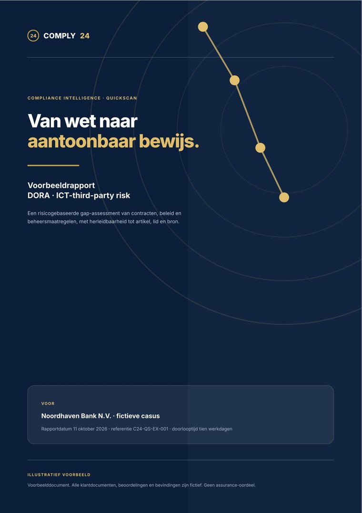

Understand the requirements. See where you stand.
No months-long implementation and no upfront decision about a new platform. You pick one law from your scope; we build the framework and assess your own policies, procedures and files against it. You receive substantiated findings and a report you keep, even if you do not continue with Comply24.
- € 4,900fixed price, excluding VAT
- 10 working daysfrom intake to delivery
- 1 lawfrom your own scope
- 3 documents150 pages in total at most
This is what one finding looks like.
Every line in the gap report runs from the article to your own document and ends in a verdict with a recommended action. That trail stays visible, years later too, and is what a supervisor wants to see.
The contract states explicitly whether subcontracting of services supporting critical functions is permitted, and under which conditions.
The supplier may engage subcontractors where this is necessary for adequate performance of the services.
The clause permits subcontracting broadly, but names no conditions, no prior assessment and no duty to notify. That makes it untestable what is permitted and who assessed it.
Make the permitted subcontracting and its conditions explicit per critical service in the contract annex, and record the approval in the vendor register.
The contract names the countries or regions where the service is provided and data are processed, and requires notification in advance of any change.
Processing takes place within the European Economic Area. Changes are communicated as soon as possible.
The region is named, but “as soon as possible” is neither a deadline nor advance notice. Without a deadline you cannot show a change of location was assessed in time.
Record a deadline and a notification moment before the change, with the countries per service in the register.
Management of ICT third-party risk is assigned and forms part of the institution’s risk management.
The third-party risk owner is responsible for the assessment and reassessment of ICT vendors and reports quarterly to the risk committee.
The responsibility is named, with a reporting line and a frequency. That is demonstrable within the evidence set examined.
No remediation. Include in the periodic reassessment when the policy is revised.
Page through it yourself.
Eight parts of a report like the one you receive after a QuickScan. The case, the institution, the documents, the quotations and the verdicts are fictitious; the structure, the legal references and the assessment scale are real.
The core at a glance
The basis is there.
Contractual assurance lags behind.
Subcontracting, audit rights, concentration management and exit arrangements in particular need demonstrable improvement.
- 12controls assessed
- 4GAP
- 5PARTIAL
- 3COVERED
What this means for the board
- There is direction. Policy, vendor selection and SLA monitoring are partly demonstrable.
- There is exposure. Four requirements lack a verifiable translation into contracts or processes.
- There is a workable path. The findings can be tied to owners, evidence and a 90-day plan.
Appoint an owner per priority within ten working days and start contractual remediation for critical vendors.
What we assessed
In scope
- One theme: management of ICT third parties supporting critical or important functions.
- Regulation at selected article level: Articles 28, 29 and 30 DORA.
- Three fictitious internal documents, twelve assessable controls and four priority findings.
Out of scope
- No technical penetration test or operating-effectiveness test.
- No full legal review of all DORA RTS and ITS.
- No formal assurance opinion or guarantee of compliance.
Which DORA obligations are relevant to this theme, how are they translated into internal controls, and what do the documents supplied prove — and not yet prove?
The report is a dated snapshot based on the documents within the agreed scope. New legislation and updated internal documents fall outside it.
From source to verdict
- D01ICT third-party risk policyGovernance, risk appetite, policyv2.3 · 01 jul 2026
- D02CloudServ EU – master agreementContract with SLA annex, critical ICT servicev4.1 · 12 mei 2026
- D03ICT vendor registerVendors, criticality, dependenciesQ3 2026 · 30 sep 2026
The chain in six steps
- 01LawProvision and paragraph
- 02ObligationRequirement worked out
- 03ControlAssessable requirement
- 04EvidenceDocument and quotation
- 05VerdictGAP / PARTIAL / COVERED
- 06ActionOwner and deadline
Assessment scale
- COVEREDRequirement demonstrably covered in the documents assessed.
- PARTIALElement present; essential elaboration or evidence missing.
- GAPNo sufficient substantiation within the scope supplied.
The platform supports identification, mapping and draft findings. An authorised reviewer assesses the source, confirms the verdict and records deviations or limitations.
Where the institution stands
3 of the 12 controls were assessed as COVERED; 5 PARTIAL and 4 GAP. This is a scope indicator, not a statement about overall DORA compliance.
- 3 COVERED
- 5 PARTIAL
- 4 GAP
Verdicts per domain
Article, evidence and status
| ID | DORA | Control or requirement | Evidence | Status | Prio |
|---|---|---|---|---|---|
| C01 | 28(1) | Accountability for ICT third parties | D01 §2 | COVERED | P3 |
| C02 | 28(3) | Register of ICT service providers | D03 tab 1 | PARTIAL | P2 |
| C03 | 28(4) | Risk assessment before contracting | D01 §4 | COVERED | P3 |
| C04 | 29(1) | ICT concentration risk | D03 tab 2 | GAP | P1 |
| C05 | 30(2)(a) | Scope and conditions for subcontracting | D02 §3.2 | GAP | P1 |
| C06 | 30(2)(b) | Locations and change notification | D02 §8.1 | PARTIAL | P2 |
| C07 | 30(2)(c) | Data integrity and confidentiality | D02 §5 | PARTIAL | P2 |
| C08 | 30(2)(d) | Access, recovery and return of data | D02 §9 | PARTIAL | P2 |
| C09 | 30(3)(a) | SLA and measurable performance targets | D02 bijl. A §2 | COVERED | P3 |
| C10 | 30(3)(b) | Notification of material developments | D02 §7 | PARTIAL | P2 |
| C11 | 30(3)(e) | Monitoring and audit rights | D02 §10 | GAP | P1 |
| C12 | 30(3)(f) | Exit and transition period | D02 §4 | GAP | P1 |
Subcontracting
The contract clause broadly permits the use of subcontractors, but the conditions for subcontracting services supporting critical functions are insufficiently determinable.
Source quotation (fictitious)“The supplier may engage subcontractors where this is necessary for adequate performance of the services.” (D02 §3.2)Why this matters
The requirement asks for explicit clarity on whether subcontracting is permitted and under which conditions. Without assessable conditions there is no demonstrable control over the chain.
Recommended remediation- Make permitted subcontracting and its conditions explicit per critical service in the contract annex.
- Define a prior assessment and notification process for relevant changes.
- Record approval and reassessment in the ICT vendor register.
Legal and Procurement together with the third-party risk owner · draft addendum within 30 days
An approach for the first 90 days
- 0–15DDecision and ownershipAppoint P1 owners; prioritise contracts and critical services.Management / Compliance
- 15–30DContract addendaDraft and review subcontracting, audit and location clauses.Legal / Procurement
- 30–60DConcentration pictureRecord dependencies, substitutability and chain risk.Risk / Vendor Mgmt
- 30–75DExit plan and test designRecord transition period and test criteria per critical ICT service.IT / BCM / Security
- 60–90DReassessment and evidenceReassess findings against new documents and close them.Compliance / Reviewer
Decision gate after day 90: reconfirm the status against current documents. Close only on demonstrable evidence, not on intended actions.
From law to evidence, in one chain
- 01StandardDORA · Article 30(2)(a)
- 02ObligationSubcontracting only under explicit conditions
- 03ControlC05 · Described and assessed subcontracting
- 04SourceD02 §3.2 · contract version 4.1
- 05VerdictGAP · F-01 · reviewer confirmed
- 06ActionContract addendum and register update · P1
A completed result
- 01Report receivedFramework, gap register, management summary and traceability.
- 02ImproveYour team carries out the actions with existing tooling or in its own way.
- 03Continue, optionallyWith Comply24 the framework is kept up to date and reassessed continuously.
Public sources consulted

Or download the example report
The same content as above, as a nine-page PDF in our house style. Useful to forward to your board, your second line or your procurement team.

One report, in four parts.
The framework, the assessment, the summary and the trail back to the source — in one document you can present and keep using.
- 1
Your compliance framework
The chosen law worked out into obligations, down to article and paragraph level, mapped to controls. Not from a template, but built on your scope.
- 2
A gap assessment
A verdict per control — GAP, PARTIAL or COVERED — with rationale, a quotation from your own document and a priority.
- 3
An executive summary
Scope, methodology, key findings and priorities. Fit to put in front of the board, the second line or the supervisor.
- 4
Traceability
The route from finding to document and regulatory source stays visible. That is the difference from an advisory report.
Four steps, ten working days.
- 1
Intake
You name the law and the documents. Within one working day we confirm the law is available in the platform, propose a start date and send the intake form and a non-disclosure agreement.
- 2
Framework
We build the framework: the law worked out into obligations by article and paragraph, mapped to controls. You confirm the scope.
- 3
Assessment
Your documents are assessed against that framework. The platform puts every finding forward with source and quotation; a named person confirms them.
- 4
Delivery
We walk through the report with you and hand it over. That completes the engagement.
Three things. We take the rest off your hands.
The documents
At most three documents within scope, 150 pages in total at most.
Confirmation of scope
One moment at which you review and confirm the framework we built.
A closing conversation
One session in which we walk through the report and hand it over.
Two outcomes, both fine.
You stop here
The report is yours. You decide what comes next, and you take no Comply24 subscription to do so. The engagement is complete.
You continue
The framework is already in the platform and forms the starting point. If you commission the implementation within six months, we deduct the € 4,900.
Exactly what the scope is.
Six terms fixed in advance, so you know what you get and what you do not.
- One law
That is available in the platform. You name the law in your request; within one working day we confirm whether it is available.
- Three documents at most
Of 150 pages in total at most.
- One review per institution
One assessment per organisation, on these terms.
- Fixed price
€ 4,900 excluding VAT. Deducted from the implementation if commissioned within six months.
- Agreed up front
A non-disclosure agreement, and a data processing agreement for the documents you supply.
- Bound to the scope
The outcome applies to the law and documents assessed, on the date of delivery. It is not a statement about your whole organisation and not an approval by a supervisor.
What you ask us first.
Do we have to buy the platform afterwards?
No. The QuickScan is a standalone engagement and is complete on delivery. The report remains yours.
Do you assess our own documents?
Yes, within the agreed scope and after a non-disclosure agreement and a data processing agreement. Three documents at most, 150 pages in total at most.
Who decides the verdict?
The platform supports the analysis and puts findings forward with source and quotation. A named person reviews and confirms every finding.
Which laws can we choose?
One law that is available in the platform. You name it in your request; within one working day we confirm whether it is available, or propose an alternative.
What if we stop afterwards?
You keep the agreed report. Access to the environment ends under the terms agreed.
Is this an approval?
No. The outcome is bound to the scope and is a snapshot on the date of delivery. It is not a judgement by DNB, the AFM or the ECB.
More than one law? The Compliance Review.
The same approach as the QuickScan, but across your full scope: all frameworks and documents, assessed by Comply24 consultants. You receive a gap register with lineage, a board report and an action plan with owners. No software to roll out. Priced per engagement, depending on the number of frameworks and documents.
Ready to put one law through it?
You name the law; within one working day we confirm it is available and propose a start date.